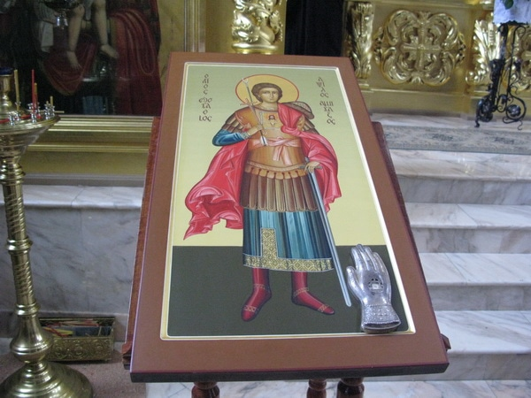
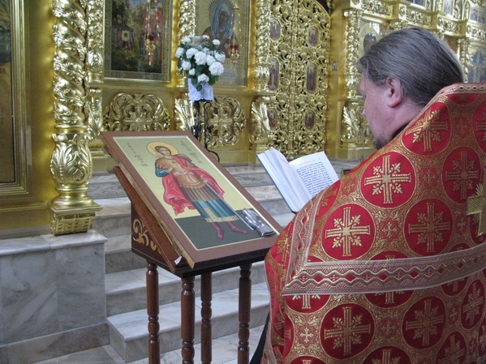
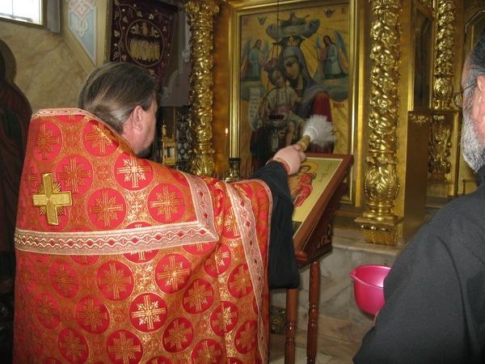

15 05 2011 (2190 дней 1 час назад)
Ковчег со святыми мощами Великомученика Евстафия Плакиды хранится в монастыре Вознесенская Давидова пустынь
http://davidova-pustyn.ru/arkhiv-fajjlov/foto-arkhiv/svjatyni-monastyrja/
Икона св.Евстафия Апсильского писана в иконописной мастерской "Ярославль"
Обряд освящения проводил настоятель монастыря о.Артемий
http://davidova-pustyn.ru/arkhiv-fajjlov/foto-arkhiv/svjatyni-monastyrja/

Икона св.Евстафия Апсильского писана в иконописной мастерской "Ярославль"

Обряд освящения проводил настоятель монастыря о.Артемий
